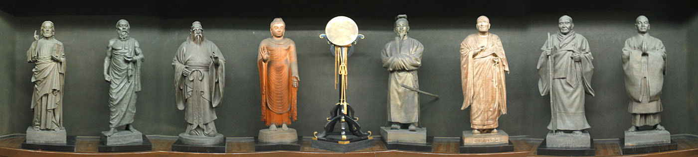

| 見たい項目をクリックして下さい | |||||||||
|
| 行 事 記 録 （詳 細 - ２４） |
|
八聖殿周辺巡り 横浜探訪の会
|
|
行 事 名 |
八聖殿周辺巡り |
|
研 究 部 会 |
横浜探訪の会 |
|
実 施 日 |
０４年６月６日（日） |
|
実 施 場 所 |
本牧八聖殿周辺 |
|
参 加 者 |
会員１０名 （須田、小野寺、須藤、印南、西田、坪井、清水、石田、小方、竹内） |
| 記 録 | 須藤淳子 |
|
概 要 |
三渓園正門−鶴翔閣内苑−オールドノリタケ展−昼食−本牧市民公園 −小野公園−八聖殿−解散 |
|
||||||||
|
6月6日（日）予報通り朝からあいにくの雨。とりやめかとTelすれば「やります。やります。」との事。一まわり年上の友と、久しぶりのデイトを兼ねた申し込み故、どうしようか一時迷うも、健脚姉のｙesにｇｏとする。 三渓園正門前10時集合。ひっきりなしの雨。いつもの事ながら、来る人来ない人がいて、先発と後発に分かれての始動。といっても、須田ガイド長筆頭に総勢１0名様ご一行。この雨の中なれど。観光バスを連ねての見学者や、40数回めという横浜茶会が催されていて、和服のコートに身を包む妙齢のご婦人が目につく。入口尚菖蒲の花が目を引く。アジサイ、ハス他はいまいち。花期としてはちょうど今端境期か。個人的には十数年ぶりの訪いに、天のオナサケか、途中しばし小降りになる。人混みの雑踏の中に行くような、人気お花見デートとちがって、しっとり、ゆったり雨の三渓園もこれ又風情あり。 無私の人原三渓氏の、歴史的遺産を後世に残すべく努められた一生が彷彿としてくる。お金や権力を握るとどうしてもいやしくなる。．．．という先入観が払拭される。園内に移築された数々の建物は、家康、秀吉、覚山尼、グランド将軍等、有名人ゆかりのものと知り、「ふーん。すごい！」と感心すれど、名ガイドには申し訳ないがヘボ受講生で刷り込み浅く、たくさんのうち、いくつ身についたか覚つかない。しかしそこは学術的記録保持者西田氏の貴重なる資料により、具体的に反芻でき救いとなっている。 又会員外も100円と、超お安い参加費なのに、特別オールドノリタケ展（老人パス不可、500円也）もタダで たっぷり目の保養をさせてもらい、これもメンバーのご厚意によるものでしょう。心よりお礼申し上げます。
おそい昼食をとり、南門から三渓園を後にする。潮干狩りのできた、かっての海に造られた上海横浜友好園、本牧市民公園を通る頃はもうドシャ降り。
その時代を精一杯支えかけぬけた、石炭産業の花形輸送、蒸気機関車操車場跡と、その目の前で雨に煙る石油コンビナート。昭和30年代の高度成長期の拠点として埋め立てられ、700有余年も連綿と続いて来た当地の人達の漁労権の放棄の記念碑 |
|
|||||||
|
|
|
横浜市というより、日本国発展という大きな歴史の波をかぶり、心ならずも、生活の場をゆずり手放さなければならなかった淳朴な市民への変革、操車場の回転線路も細郷市長の手になる漁業をやめるに至った証の碑も、今、人の訪れの少ないこのような所で雨にぬれ、忘れ物のように静かに佇んでいる。それらの現役時代に共に人生の大半を生きてきた者の一人として、三渓園のより古い重要文化財以上に惜別の情を抱きつつ 黙々と雨に身をまかす。思えば自らマイ人生を築いて生きているように見えて、実のところは、時代というあてにならない廻り舞台で、不器用ながら生きる大根役者のけなげなさ共有という思いだろうかー。 そんな思いがぬれる体の燃焼力になったのでしょう。飛沫が上がり、滝のように泥が流れ落ちる階段を昇り、ジャブジャブ山道を進む。これをもぼりきれば八聖殿かと頂上をめざせば、そこは草むす八王寺山のてっぺん砲台跡。「足だけじゃなく あっちこっち冷たくなっちゃったよ。」と殿方一人つぶやく。朝の時点でとりやめることもできた臨時参加年増女連れ、あわれみを受けるのも、弱音をはいてご迷惑をおかけするのも潔しとしない、共通の自負心があったのでしょう。泥坂道をころばぬよう細心の注意をはらって黙々と歩き続ける。こんな大降りにこんな山道を歩いたのは何年ぶりだろうかー。でも無事歩けたって事はま、若いって証拠！すぐ「あったかいコーヒー飲みたい」とか「エーもう疲れちゃった。腰おろしたいよ」「お勉強も嫌いじゃないけど、予定は未定なんだから」等すぐ楽したい怠け者も、皆様の旺盛かつ強力なる学習意欲に引っぱられ、山を下る。 緑の木立が開け、ふと目を上げれば忽然となつかしの八聖殿正門前。山超え谷超え300°ぐるっとまわってやっと到着の感有。まず安堵。 そこでの曽根係官の説明がこれ又くわしい。市博ガイド研修中ご講義をいただいた事を補うかの如く、資料を元に精力的かつ専門的熱弁。昭和10年代にここに来たことある相棒 「八聖人は全くおんなし」。今では八聖人のおわします所と同じ位本牧地区の歴史資料館として充実。 |
|
| ビッグな写真です！ 右にスクロールしてご覧ください → |
|  |
| キリスト、ソクラテス、孔子、釈迦、聖徳太子、弘法大師、親鸞、日蓮 |
|
お話を聞いているうちぬれた衣服もかわいてくる。外はまだ雨なれど4時。三渓園ガイドを午前中こなし、午後から車で合流した石田さん、ご親切にも関内迄二人運んでくださり、一足先に町中で一息 体力も増進され、今まで三渓にかくれて知られていなかった、小野光景氏の偉業にも気づかせてもらい、今回の横浜探訪は大変有意義でありました。心よりお礼申し上げます。 |
|